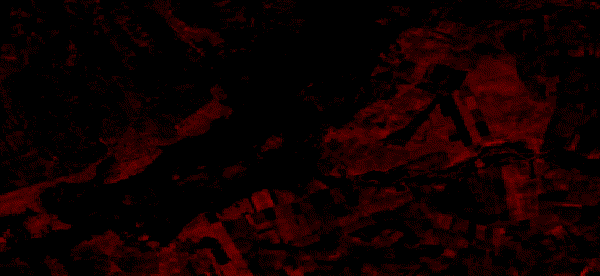
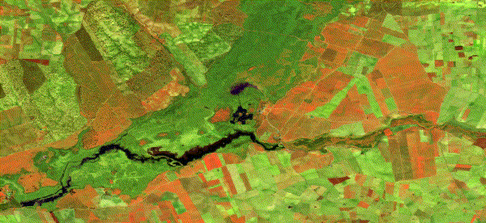

Geografía Interactiva
Análisis de Aguas y TimeLapse • Práctica 10
Descargar Ejercicio
Volver al Menú
WebMap Chapala (NDWI)
Interactivo
WebMap Rukwa (MNDWI)
Interactivo + Giro
TimeLapse Landsat 9
GIF Animado

TimeLapse Sentinel 2
GIF Animado
